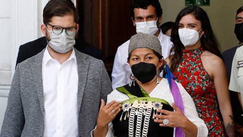

Presidente Gabriel Boric y Convención Constitucional tendrán documental en Netflix |
|---|
| Categoria: Politica |
|  |
|
Los próximos meses del Gobierno de Gabriel Boric y el desenlace del trabajo de la Convención Constitucional serán registrados en un documental que llegará a Netflix. La pieza audiovisual estará a cargo del director alemán Daniel Carsenty junto al productor Nick Krüger, en un trabajo que también incluye a Europea TV, el canal franco-alemán ARTE y la plataforma de streaming Netflix. |
Boric pone a Máximo Pacheco a la cabeza de Codelco |
|---|
| Categoria: Politica |
|
El Gobierno designó a Máximo Pacheco Matte, ex ministro de Energía en la segunda administración de Michelle Bachelet, como nuevo presidente del directorio de Codelco. El empresario y militante socialista tuvo un destacado paso por dicha cartera, con elogios transversales en el mundo político, al punto que su nombre se consideró como parte de los "presidenciables" de la centroizquierda. |
Corte de Antofagasta ratificó la solicitud de extradición de Karen Rojo |
|---|
| Categoria: Politica |
|
De manera unánime, la Primera Sala de la Corte de Apelaciones de Antofagasta acogió la solicitud de extradición interpuesta por la Fiscalía en contra de la ex alcaldesa Karen Rojo, que huyó del país al tiempo que se confirmó su condena de cinco años y un día de presidio por el delito de fraude al Fisco. Después de que el Juzgado de Garantía de la ciudad acogiera la petición ayer martes, restaba la ratificación del tribunal de alzada para que el Ministerio de Relaciones Exteriores reciba, junto con una copia del fallo, un documento que le solicite practicar las gestiones diplomáticas necesarias para que el Reino de los Países Bajos detenga a la ex autoridad, pues se estima que es allí donde se encuentra desde la semana pasada. |